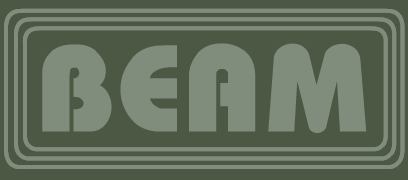
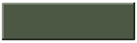

BEAM is a desktop client for watching cartoons / playing games / and other stuff made by Roan Hemmings.
LATEST DOWNLOADS
DEV Branch

The latest development branch of BEAM (If you like stability, you won't like this!)
(NOT WORKING CORRECTLY, PLEASE USE OFFLINE DOWNLOAD BELOW)
OFFLINE
The currently ONLY working version of BEAM, security is annoying.
© Roan Hemmings - 2023, all rights reserved.